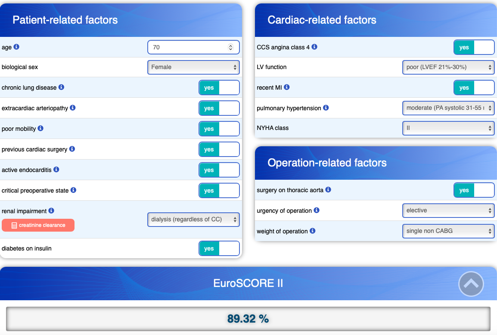

# Generate some example data
set.seed(12345) # To make the results reproducible
example_data <- data.frame(outcome = rbinom(100, 1, 0.5), # Generate a binary outcome
group = sample(c("A", "B"), 100, replace = T)) # Generate a random group assignmentToday, I will show you a way to implement the EuroSCORE II risk score in R. EuroSCORE is a risk score that tries to predict mortality after cardiac surgery, and is used in clincal practice to assess individual risk before surgery. This helps inform the patient (and surgeon) about the expected risk, and can also contribute in the decision making whether the patient will likely benefit the most from surgery, or some other procedure such as transcatheter aortic valve implantation (TAVI), depending on the issue at hand and co-morbidities. If you just want to download function with same test data, you can do so here.
EuroSCORE was created following a collaboration by researchers at Royal Papworth Hospital in Cambridge UK and the Centre Hospitalier Universitaire de Martinique.
Since it’s conception, it has been updated several times. The latest version is called the EuroSCORE II, and it is a logistic regression model. As stated in the original publication of EuroSCORE II:
Cardiac surgical mortality has significantly reduced in the last 15 years despite older and sicker patients. EuroSCORE II is better calibrated than the original model yet preserves powerful discrimination. It is proposed for the future assessment of cardiac surgical risk.
As you might know, a logistic model estimates the \(\log\text{odds}\), and it’s linear predictor can be written as:
\[\log\text{odds} = \beta_0 + \beta_1X_1 + \beta_2X_2 + ... \beta_iX_i\]
Consequently, the \(e^{\beta_i}\) can be interpreted as the odds ratio if all other covariates are held constant.
Let’s also do a quick recap what odds actually are. Odds are usually expressed as \(\frac{events}{non-events}\). Compare this to risk, which would be \(\frac{events}{events+non-events}\). So, to convert odds to risk, we can use the formula \(Risk=\frac{Odds}{1+Odds}\).
Let’s now explore this using R.
Now, we can manually calculate the odds of the outcome per each group. Note that I will calculate risk using odds risk_1, and just using \(Risk=\frac{events}{non-events}\). Of course, they are identical.
library(dplyr)
library(broom)
example_data %>% group_by(group) %>%
summarise(events = sum(outcome == 1),
non_events = sum(outcome == 0),
odds = events/non_events,
risk = events/(events+non_events),
risk_1 = odds/(1+odds))# A tibble: 2 × 6
group events non_events odds risk risk_1
<chr> <int> <int> <dbl> <dbl> <dbl>
1 A 26 21 1.24 0.553 0.553
2 B 26 27 0.963 0.491 0.491Now let’s use a logistic regression model:
reg_mod <- glm(outcome ~ group, data = example_data, family = "binomial")
summary(reg_mod)
Call:
glm(formula = outcome ~ group, family = "binomial", data = example_data)
Coefficients:
Estimate Std. Error z value Pr(>|z|)
(Intercept) 0.2136 0.2934 0.728 0.467
groupB -0.2513 0.4020 -0.625 0.532
(Dispersion parameter for binomial family taken to be 1)
Null deviance: 138.47 on 99 degrees of freedom
Residual deviance: 138.08 on 98 degrees of freedom
AIC: 142.08
Number of Fisher Scoring iterations: 3Here we fitted a logistic regression model, where the coefficients can be interpreted as the log(odds). Now, let’s convert that to odds (or odds ratios):
tidy(reg_mod) %>% select(group = term, coef = estimate) %>%
mutate(OR = exp(coef))# A tibble: 2 × 3
group coef OR
<chr> <dbl> <dbl>
1 (Intercept) 0.214 1.24
2 groupB -0.251 0.778The (Intercept) here refers to Group A odds, but to obtain the odds for Group B we must add the coefficients together, otherwise it is the odds ratio of Group B over Group A.
exp(reg_mod$coefficients[1]+reg_mod$coefficients[2])(Intercept)
0.962963 All the numbers are the same as our manual calculation (although the output is rounded differently). Now let’s calculate the risk:
exp(reg_mod$coefficients[1])/(1+exp(reg_mod$coefficients[1]))(Intercept)
0.5531915 This function is actually built-in in the model object itself, and does the calculation much faster (which can be useful if you work with large data sets).
reg_mod$family$linkinv(reg_mod$coefficients[1])(Intercept)
0.5531915 Using the linear predictor, the odds of Group A is:
\[log_{odds}=\beta_0 + \beta_1Group_B*0\] \[log_{odds[Group A]} = 0.2136 + (-0.2513*0)\]
And consequently, the linear predictor for Group B is:
\[log_{odds}=\beta_0 + \beta_1Group_B*1\]
\[log_{odds[Group B]} = 0.2136 + (-0.2513*1)\]
Now, let’s implement the results from the EuroSCORE II logistic regression model as a function to estimate the EuroSCORE II in our own data sets. Below are the coefficients as reported by the EuroSCORE II publication They modeled age non-linearly, as stated in the article:
βi the coefficient of the variable Xi, for age, Xi = 1 if patient age ≤60; Xi increases by one point per year thereafter (age 60 or less Xi = 1; age 61 if Xi = 2; age 62 if Xi = 3 and so on).
| Variable. | Coefficient | |||
|---|---|---|---|---|
| NYHA | ||||
| II | 0.1070545 | |||
| III | 0.2958358 | |||
| IV | 0.5597929 | |||
| CCS4 | 0.2226147 | |||
| IDDM | 0.3542749 | |||
| Age | 0.0285181 | |||
| Female | 0.2196434 | |||
| ECA | 0.5360268 | |||
| CPD | 0.1886564 | |||
| N/M mob | 0.2407181 | |||
| Redo | 01.118599 | |||
| Renal dysfunction | ||||
| On dialysis | 0.6421508 | |||
| CC ≤ 50 | 0.8592256 | |||
| CC 50−85 | 0.303553 | |||
| AE | 0.6194522 | |||
| Critical | 1.086517 | |||
| LV function | ||||
| Moderate | 0.3150652 | |||
| Poor | 0.8084096 | |||
| Very poor | 0.9346919 | |||
| Recent MI | 0.1528943 | |||
| PA systolic pressure | ||||
| 31–55 mmHg | 0.1788899 | |||
| ≥55 | 0.3491475 | |||
| Urgency | ||||
| Urgent | 0.3174673 | |||
| Emergency | 0.7039121 | |||
| Salvage | 1.362947 | |||
| Weight of procedure | ||||
| 1 non-CABG | 0.0062118 | |||
| 2 | 0.5521478 | |||
| 3+ | 0.9724533 | |||
| Thoracic aorta | 0.6527205 | |||
| Constant | −5.324537 |
Using this information, we can calculate the EuroSCORE II in a function by using a series of mutate() and case_when() statements.
calc_euroscore <- function(data.frame) {
euroscore <- data.frame %>% mutate(est_NYHA = case_when(EURO_NYHA == 2 ~ 0.1070545,
EURO_NYHA == 3 ~ 0.2958358,
EURO_NYHA == 4 ~ 0.5597929,
EURO_NYHA == 1 ~ 0,
EURO_NYHA == 9 ~ NA_real_),
est_ccs4 = case_when(EURO_CCS4 == 9 ~ NA_real_,
TRUE ~ 0.2226147 * EURO_CCS4),
est_IDDM = case_when(is.na(DIABETESINSULIN) ~ 0,
.default = 0.3542749 * DIABETESINSULIN),
est_age = case_when(EURO_AGE <= 60 ~ 0.0285181,
EURO_AGE > 60 ~ (EURO_AGE - 59) * 0.0285181),
est_female = case_when(EURO_SEX == 2 ~ 0.2196434,
EURO_SEX == 1 ~ 0),
est_eca = case_when(EURO_EXTRACARDIAC == 9 ~ NA_real_,
TRUE ~ 0.5360268 * EURO_EXTRACARDIAC),
est_cpd = case_when(EURO_CHRONICPULM == 9 ~ NA_real_,
TRUE ~ 0.1886564 * EURO_CHRONICPULM),
est_neuro = case_when(EURO_POORMOBILITY == 9 ~ NA_real_,
TRUE ~ 0.2407181 * EURO_POORMOBILITY),
est_PREVCARDSURG = case_when(EURO_PREVCARDSURG == 9 ~ NA_real_,
TRUE ~ 1.118599 * EURO_PREVCARDSURG),
est_cc = case_when(DIALYS == 1 ~ 0.6421508,
EURO_CREATININE_CLEAREANCE <= 50 ~ 0.8592256,
EURO_CREATININE_CLEAREANCE > 50 & EURO_CREATININE_CLEAREANCE <= 85 ~ 0.303553,
EURO_CREATININE_CLEAREANCE > 85 ~ 0),
est_AE = case_when(EURO_ENDOCARDITIS == 9 ~ NA_real_,
TRUE ~ 0.6194522 * EURO_ENDOCARDITIS),
est_critical = case_when(EURO_CRITICAL == 9 ~ NA_real_,
TRUE ~ 1.086517 * EURO_CRITICAL),
est_LV = case_when(EURO_VK_EJFRACT2 == 0 ~ 0,
EURO_VK_EJFRACT2 == 1 ~ 0.3150652,
EURO_VK_EJFRACT2 == 2 ~ 0.8084096,
EURO_VK_EJFRACT2 == 3 ~ 0.9346919),
est_hjinf = case_when(EURO_HJINF == 9 ~ NA_real_,
TRUE ~ 0.1528943 * EURO_HJINF),
est_pulmonchoice = case_when(EURO_PULMONCHOICE == 0 ~ 0,
EURO_PULMONCHOICE == 1 ~ 0.1788899,
EURO_PULMONCHOICE == 2 ~ 0.3491475),
est_urgency = case_when(EURO_URGENCY == 1 ~ 0,
EURO_URGENCY == 2 ~ 0.3174673,
EURO_URGENCY == 3 ~ 0.7039121,
EURO_URGENCY == 4 ~ 1.362947),
est_weightofprocedure = case_when(EURO_WEIGHTOFPROCEDURE == 0 ~ 0,
EURO_WEIGHTOFPROCEDURE == 1 ~ 0.0062118,
EURO_WEIGHTOFPROCEDURE == 2 ~ 0.5521478,
EURO_WEIGHTOFPROCEDURE == 3 ~ 0.9724533),
est_THORACALAORTA = case_when(EURO_THORACALAORTA == 9 ~ NA_real_,
TRUE ~ 0.6527205 * EURO_THORACALAORTA),
est_sum = est_NYHA + est_ccs4 + est_IDDM + est_age + est_female + est_eca + est_cpd + est_neuro +
est_PREVCARDSURG + est_cc + est_AE + est_critical + est_LV + est_hjinf + est_pulmonchoice +
est_urgency + est_weightofprocedure + est_THORACALAORTA,
euro_new = exp(-5.324537 + est_sum)/(1 + exp(-5.324537 + est_sum)),
euro_new = round(euro_new * 100, 2)) %>%
pull(euro_new)
return(euroscore)
}Let’s try it out on a dummy data set:
test_data <- data.frame(EURO_NYHA = c(2, 9),
EURO_CCS4 = c(1, 1),
DIABETESINSULIN = c(1, NA),
EURO_AGE = c(70, 9),
EURO_SEX = c(2, 2),
EURO_EXTRACARDIAC = c(1, 1),
EURO_CHRONICPULM = c(1, 9),
EURO_POORMOBILITY = c(1, 1),
EURO_PREVCARDSURG = c(1, 1),
DIALYS = c(1, 0),
EURO_CREATININE_CLEAREANCE = c(40, 40),
EURO_ENDOCARDITIS = c(1, 9),
EURO_CRITICAL = c(1, 9),
EURO_VK_EJFRACT2 = c(2, 2),
EURO_HJINF = c(1, 1),
EURO_PULMONCHOICE = c(1, 1),
EURO_URGENCY = c(1, 1),
EURO_WEIGHTOFPROCEDURE = c(1, 1),
EURO_THORACALAORTA = c(1, 1))
calc_euroscore(test_data)[1] 89.32 NAThis is the same result as on the EuroSCORE II calculator:

A few closing remarks. You have to decide before hand how you want to handle missing data. In the current implementation, if anything is missing it will not calculate a EuroSCORE. In most cases, it might be reasonable to prepare the data set with replace_na() to chose some sort of default value. I would also like to thank our PhD student, Ruixin Lu for the help with developing this function when we needed it for one of our projects.